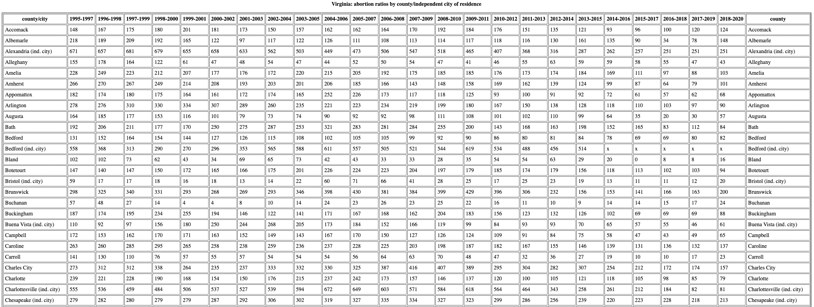

Home
Research
Teaching
Project Blog
Categories
All
(21)
Others
(5)
Paper1
(12)
Paper2
(4)
Project Blog
Order By
Default
Modified - Oldest
Modified - Newest
Title

Abortion
The expansion of Medicaid reduced the cost of abortion and related care services, which may have increased the demand for abortion services. However, the expansion of…
Oct 29, 2024
Modified
Nov 1, 2024
Social Network Activation: Application in Smartphone Use
Oct 9, 2023
Modified
Oct 17, 2024
Review for Production and Operations Management(2024)
The latest review report for the manuscript
Breaking Barriers: Improving Patient Adherence to Appointments and Provider Productivity through Telehealth(POM-Jul-24-OA-1071)
is as…
Sep 16, 2024
Modified
Sep 16, 2024
Review for Production and Operations Management(2024)
The latest review report for the manuscript
Breaking Barriers: Improving Patient Adherence to Appointments and Provider Productivity through Telehealth(POM-Jul-24-OA-1071)
is as…
Sep 16, 2024
Modified
Sep 16, 2024
RQ2: Effects of Communication-Driven Use
For the hypotheses development, I referred to the paper “Thinking about U: Theorizing and testing U- and inverted U-shaped relationships in strategy research”
(Haans…
May 21, 2024
Modified
Sep 3, 2024
Outline
The outline are below:
Apr 16, 2024
Modified
Aug 26, 2024
Robustness Checks
In…
Jul 27, 2024
Modified
Aug 7, 2024
Selection Issues
In this update, we try to identify the confounding factors for the three major independent variables: screen time, unlock frequency and message.
Feb 26, 2024
Modified
Jul 5, 2024
Daylight saving time
In this blog, we check our results could be impacted by daylight saving time.Daylight saving time refers to the practice of setting the clocks forward by one hour from…
Apr 23, 2024
Modified
Apr 23, 2024
CHITA Conference
The slides for CHITA 2024 are below:
Apr 16, 2024
Modified
Apr 23, 2024
Algorithmic Nudging: An Application in Curbing Problematic Smartphone Use
An Application in Curbing Problematic Smartphone Use
Apr 16, 2024
Modified
Apr 16, 2024
Instrument Variable for Screen Time
In this update, we try to find an instrument variable to justify the causal effect of screen time on sleep debt. First, we introduce the related variables:
Feb 6, 2024
Modified
Apr 9, 2024
SP2 Reveiw Response: Social Network Activation: Application in Smartphone Use
We thank Dr.Adjerid, Dr.Liu, and Dr.Lowry for your insightful and valuable feedback and for the opportunity to submit a revision. In addition to highlighting the areas that…
Dec 23, 2023
Modified
Apr 6, 2024
Instrument Variable for Screen Time
In this update, we try to find an instrument variable to justify the causal effect of screen time on sleep debt. First, we introduce the related variables:
Mar 19, 2024
Modified
Mar 25, 2024
Frame Theory
The term involution is originally used to describe a society or economic system that becomes increasingly competitive inside but does not generate more output. Nowadays, it…
Feb 4, 2024
Modified
Mar 25, 2024
Smartphone Use, Social Support, and Sleep Health
Oct 9, 2023
Modified
Mar 25, 2024
Mediation Effect of Steps
When we were exploring the impact of network features under the influence of physical activities, we observe diminishing effects of core number with the increase of…
Feb 4, 2024
Modified
Mar 25, 2024
Contact Information Look UP
In the aggregation of communication events of Paper 1, we only match the communication events with the contacts reported in the
current
wave of social network surveys.…
Mar 10, 2024
Modified
Mar 25, 2024
Network Overlapping
Since participants report their network contacts over social network survey, some contacts may be repteatedly reprted in…
Jan 29, 2024
Modified
Mar 25, 2024
Behavior Segmentation for Smartphone Use
We cluster the smartphone use behaviors based on the three major metrics of smartphone use actions: Screen time, unlock frequency and message.
Dec 9, 2023
Modified
Mar 25, 2024
Causal Inference
Since we find the screen time has a U-shape impact on sleep debt, we may wonder what mechanisms behind it. The following figure…
Jan 8, 2024
Modified
Mar 25, 2024
No matching items


/images/clipboard-3769634593.png)